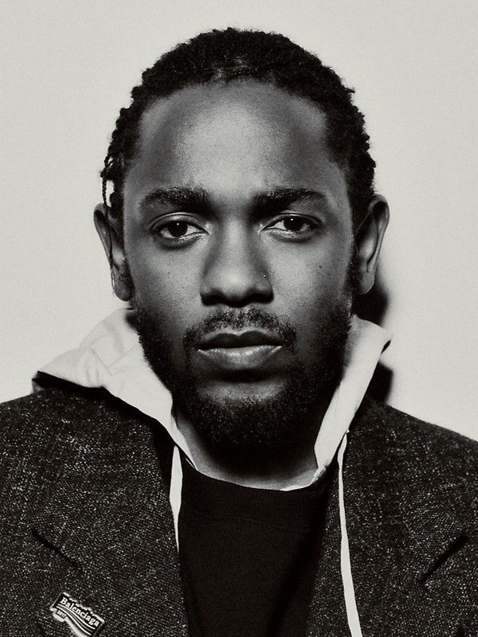
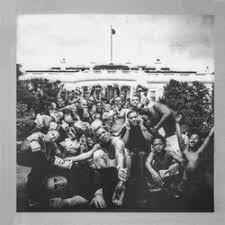
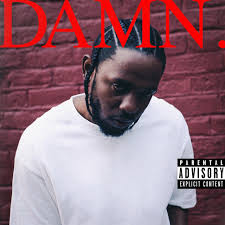

Kendrick Lamar Duckworth (Compton, California, 17 de junio de 1987) es un rapero estadounidense, que tiene una voz de rango Tenor. Lamar es ampliamente considerado como uno de los mejores raperos de su generación gracias a su aclamada obra discográfica que envuelven sus experiencias dentro de la cultura afroamericana y del hip-hop, fusionando géneros musicales progresivos y tópicos de religión, clase social, política, salud mental y conciencia social.
I hope you find some peace of mind in this lifetime Tell them, tell 'em, tell them the truth I hope you find some paradise (tell them, tell 'em the truth) Tell 'em, tell 'em, tell 'em, tell them your-
I've been goin' through somethin' One thousand, eight hundred and 55 days I've been goin' through somethin' Be afraid
What is a bitch in a miniskirt? A man in his feelings with bitter nerve What is a woman that really hurt? A demon, you're better off killin' her What is a relative, making repetitive narratives on how you did it first? That is a predator, hit reverse All of your presidents evil thirst
What is a neighborhood rep'table? That is a snitch on a pedestal What is a house with a better view? A family broken in variables What is a rapper with jewelry? A way that I show my maturity What if I call on security? That mean I'm calling on God for purity
I went and got me a therapist I can debate on my theories and sharing it (whoa) Consolidate all my comparisons Humblin' up because time was imperative (whoa) Started to feel like it's only one answer to everything, I don't know where it is (whoa) Popping a bottle of Claritin (whoa) Is it my head or my arrogance? (Whoa)
Shaking and moving, like, what am I doing? I'm flipping my time through the Rolodex Indulging myself and my life and my music, the world that I'm in is a cul-de-sac The world that we in is just menacing, the demons portrayed religionous I wake in the morning, another appointment, I hope the psychologist listenin'
The new Mercedes with black G Wagon The "Where you from?" It was all for rap I was 28 years young, twenty mill' in tax Bought a couple of mansions just for practice Five hundred in jewelry, chain was magic Never had it in public, late reaction 50K to cousins, post a caption Pray none of my enemies hold me captive
I grieve different
I grieve different
Huh
I met her on the third night of Chicago North America tour, my enclave Fee-fi-fo-fum, she was a model Dedicated to the songs I wrote and the Bible Eyes like green, penetratin' the moonlight Hair done in a bun, energy in the room like Big Bang for theory, God, hopin' you hear me Phone off the ringer, tell the world I'm busy
Fair enough, green eyes said her mother didn't care enough Sympathize when her daddy in the chain gang Her first brother got killed, he was 21 I was nine when they put Lamont in the grave Heartbroken when Estelle didn't say goodbye Chad left his body after we FaceTimed Green eyes said you'd be okay, first tour, sex the pain away
I grieve different
I grieve different
Huh
The new Mercedes with black G Wagon The "Where you from?" It was all for rap I was 28 years young, twenty mill' in tax Bought a couple of mansions just for practice Five hundred in jewelry, chain was magic Never had it in public, late reaction 50K to cousins, post a caption Pray none of my enemies hold me captive
So what? Paralyzed, the county building controlled us I bought a Rolex watch, I only wore it once I bought infinity pools, I never swimmed in I watched Keem buy four cars in four months You know the family dynamic's on repeat The insecurities locked down on PC I bought a .223, nobody peace treat You won't doo-doo me, I smell TNT
Dave got him a Porsche, so I got me a Porsche Paid lottery for it, I ain't want it in portions Poverty was the case But the money wipin' the tears away
I grieve different Everybody grieves different Everybody grieves different I grieve different Huh


JULIAN ALEJANDRO ALONSO CORREDOR
LAURA CATALINA RODRIGUEZ AREVALO
11-05 2026